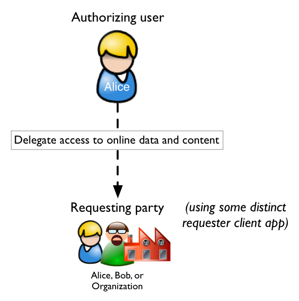
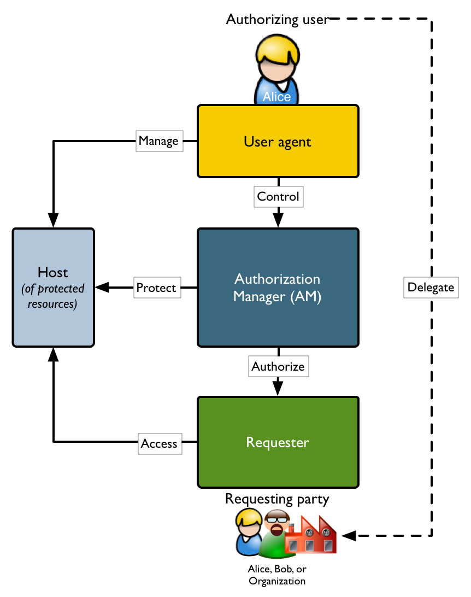
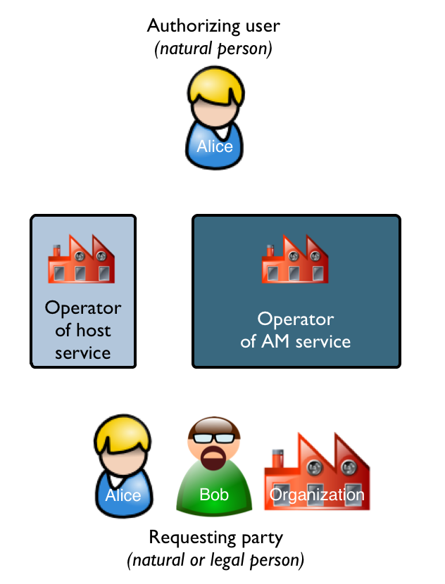
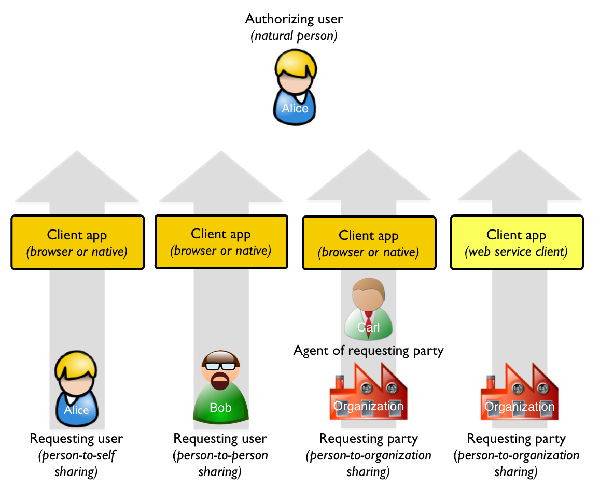
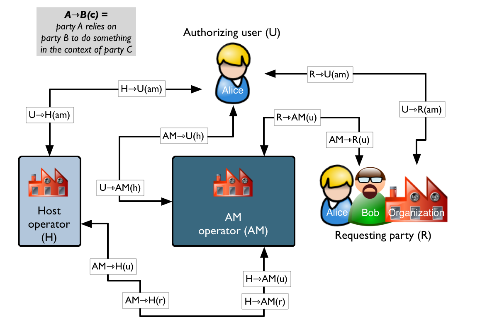
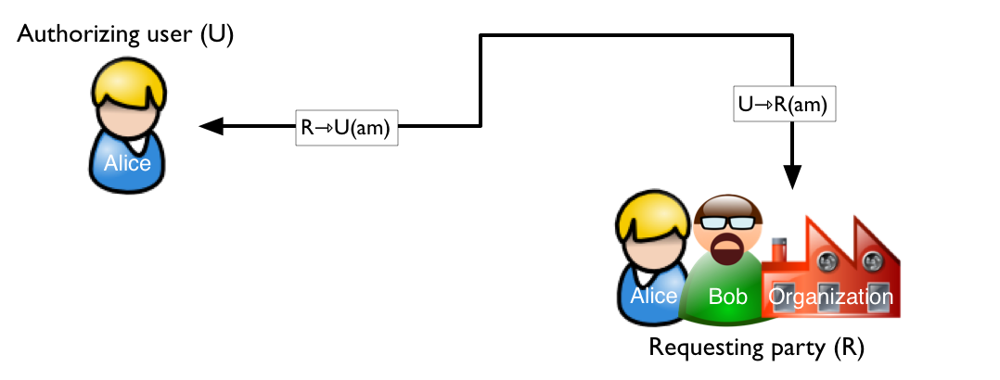
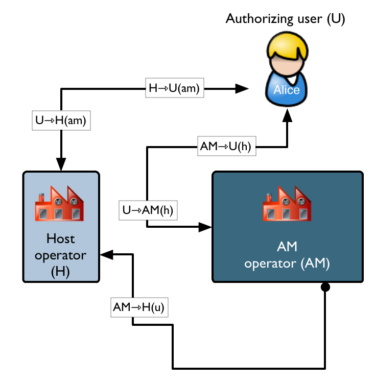
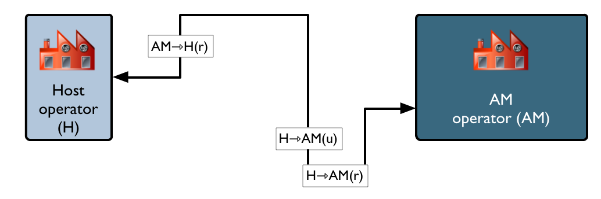
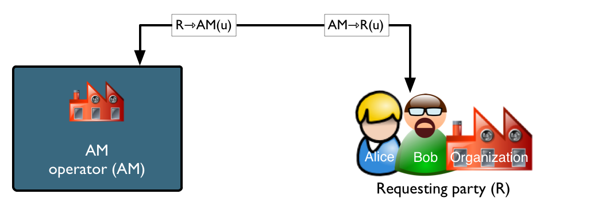
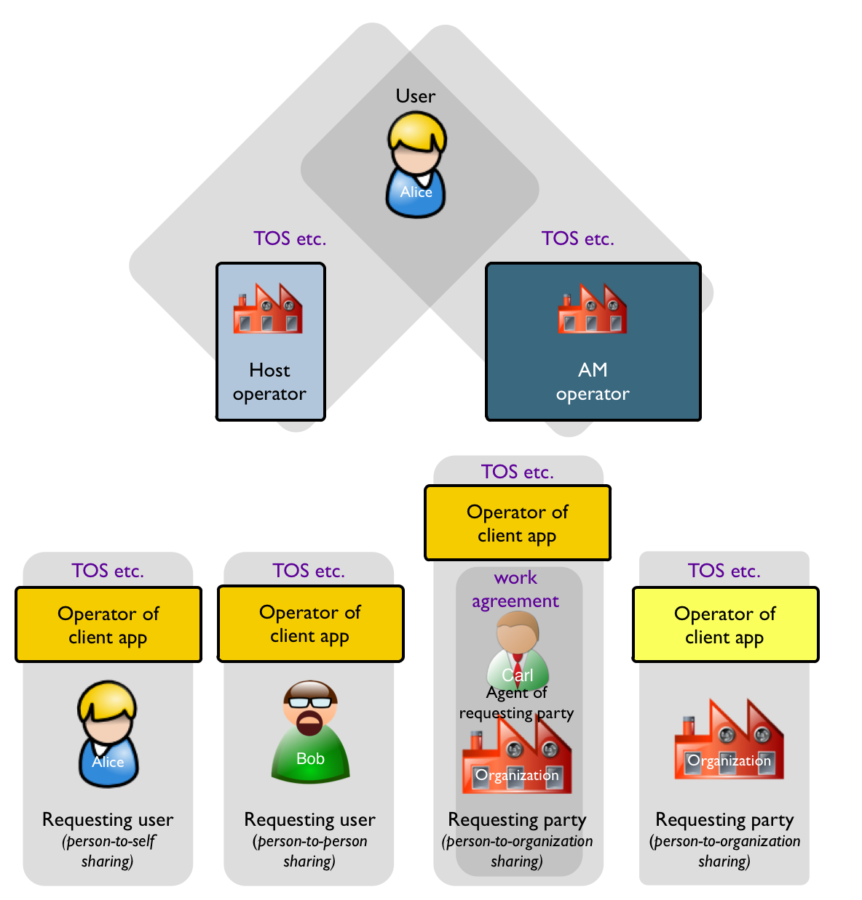

Binding Obligations on User-Managed Access (UMA) Participants¶
Note
- Internet Draft 化しました
- Based on http://tools.ietf.org/html/draft-maler-oauth-umatrust-00
Table of Contents
- Abstract
- 1. Introduction
- 2.1 Distinguishing Software Endpoints from Legally Responsible Parties
- 2.2. Sharing Constellations
- 2.3. UMA Trust Relationships
- 2.3.1. The Authorizing User-Requesting Party Trust Relationships at the Heart of UMA
- 2.3.2. The Trust Relationships Among the Authorizing User, AM Operator, and Host Operator Formed by Their Introduction
- 2.3.3. The Trust Relationships Between the Host Operator and AM Operator That Govern the Protection API
- 2.3.4. The Trust Relationships Between The AM Operator and Requesting Party That Govern Access
- 2.4. The Role of Private Agreements
| orphan: |
|---|
Abstract¶
User-Managed Access (UMA) is a profile of OAuth 2.0.
UMA defines how resource owners can control protected-resource access by clients operated by arbitrary requesting parties, where the resources reside on any number of resource servers, and where a centralized authorization server governs access based on resource owner policy.
This document provides a contractual framework that defines the minimum obligations of parties that operate and use UMA-conforming software programs and services.
The goal of this framework is to support end-to-end legal enforceability of the terms and conditions of access sharing relationships between authorizing and requesting sides that use UMA.
The audience for this document includes technologists, legal professionals, and operators of UMA-conforming services.
(draft 00 : http://tools.ietf.org/html/draft-maler-oauth-umatrust-00)
1. Introduction¶
UMA is a protocol that describes a technical “contract” for HTTP-based interactions (such as standardized request and response messages involving standardized data formats) among compliant software entities. The entities fill various roles in order to achieve “user-managed access” to Web resources. The following diagram illustrates the high-level goal of UMA.
The following diagram illustrates the high-level architecture UMA uses to achieve its goal.
Software entities participating in a protocol are frequently known as endpoints. The UMA endpoints are:
Authorizing user (the “user” in User-Managed Access)
- “User” is often used informally in the UMA spec, where what is really meant is the browser
(or other client software application) being operated by this person
Host (of “protected resources”)
Requester
2.1 Distinguishing Software Endpoints from Legally Responsible Parties¶
Because software is just a tool and can’t be held legally responsible for its own actions, and because UMA has a goal of setting legally enforceable conditions for access authorization to resources, we acknowledge the importance of the natural persons (human beings) and legal persons (such as companies) that run, control, own, contract to use, etc. UMA-compliant software. Let’s refer to these as parties to distinguish them from protocol endpoints, and name the corresponding UMA parties as follows:

Authorizing user — the natural person seeking to protect resources stored at the host
- “Authorizing user” is used instead of the more generic “authorizing party” because the scope of UMA’s initial version focuses primarily on humans acting on their own behalf on the Web, rather than companies or other legal persons
Host operator — the natural or legal person responsible for the running host service
Authorization manager operator (AM operator) – the natural or legal person responsible for the running AM service
Requesting party — the natural or legal person seeking access to protected resources
2.2. Sharing Constellations¶
While the essential end-to-end relationship being managed in UMA is the one between the authorizing user and the requesting party, there are subtle variations around the nature of the latter and the nature of the software they might use, as illustrated by the following diagram.
Each of these types of requesting party and interaction style defines a different sharing constellation. Following are examples of each:
Person-to-self sharing:
This describes most OAuth-mediated access, for example, when Alice introduces the Klout service to her Twitter account. She uses both services herself, and wants them to communicate together on her behalf.
Person-to-person sharing:
Today, many Web 2.0 sites offer some level of this control, but methods, strengths, and interfaces are inconsistent between sites and we’re not able to reuse policies across sites.
For example, Alice can share Flickr photos with Bob by adding him to her Flickr “friends” or “family” list or by mailing him a special link to a photo album. Or Alice can add Bob as a “friend” on Facebook.
Person-to-organization sharing mediated by a requesting party agent:
For example, Alice wants to give her dentist’s office temporary access to her calendar, to make it easier to schedule a series of root canal appointments. Carl, the office assistant, might be the actual person acting on behalf of the dentist’s practice who sees Alice’s calendar.
Person-to-organization sharing mediated by an autonomous web service client:
For example, Alice has crafted a “personal request for proposals” (RFP) because she’s in the market for a new car, and she’s willing to let car dealerships in her region of the country see the RFP and make her offers. Different car dealerships might use Web crawler services to go out and collect such RFPs, and these services will have to prove in automated fashion that they legitimately represent the right kind of business.
Each constellation’s requirements for successful user-managed access may be distinct.
For example, in person-to-self sharing, it’s unlikely Alice will want to impose stringent contract terms on herself. In person-to-organization sharing, if the organization is using a web service client, it makes no sense to present a browser-interaction interface to it. And if the organization is acting through an agent such as a receptionist or administrator, that person may need to prove they are acting on behalf of the organization.
Note
constellation = group,cluster
2.3. UMA Trust Relationships¶
The really interesting question is:
If something goes wrong, will it be possible to assign responsibility accurately?
For example, if Alice sets policies that she thinks will prevent Zeke from seeing her calendar, and Zeke gets access somehow through some requester client app, who exactly was at fault? Since UMA imposes a very loose coupling between the setting of policy, the application of policy in assigning authorizations, and the providing of resources, a lot could go wrong. The act of authorization has to be made meaningful through making different parties’ actions enforceable and auditable.
The baseline behavior expectations of all UMA parties are summarized in the following diagram, and elucidated in the following sections. Here’s how to read this diagram. When party A relies on party B to do something, this means party A has a reasonable expectation that party B will do it. Depending on actual legal arrangements between them, this might or might not rise to the level of a liability on party B’s part.
Note that various deployments of online services might impose additional “special terms” beyond the “general terms” imposed by the use of the UMA core protocol. Such services might specify these terms in technical profiles of the UMA specification, in contractual form, or both.
2.3.1. The Authorizing User-Requesting Party Trust Relationships at the Heart of UMA¶
This is the set of trust relationships that describes the overall purpose of UMA. (The authorizing user works through the AM as a proxy for authorization management.)
| TR | Who relies on whom? | Expected behavior of the responsible party | When is TR formed? | Comments |
| U⇾R(am) | Authorizing user relies on requesting party | To truthfully supply claims required for access authorization to the AM. To adhere to any promises made in the form of self-asserted claims. |
In UMA phase 2, when the requesting party supplies claims to the AM. | This is precisely the end-to-end access authorization agreement that UMA exists to forge. |
| R⇾U(am) | Requesting party relies on authorizing user | To respect the boundaries of data usage constraints given to the requesting party. | In UMA phase 2, when the AM grants the requesting party a permission for the requested scope. | For example, the user should not subsequently protest the requesting party’s resale of the user’s data if this was allowed by the terms of the access authorization. The AM operator acts as the user’s proxy (in the U⇾AM relationship forged previously) set the boundaries of permissions based on the user’s policies. |
2.3.2. The Trust Relationships Among the Authorizing User, AM Operator, and Host Operator Formed by Their Introduction¶
This is the set of trust relationships formed in UMA phase 1, when the user introduces a host and AM to work together in protecting resources. The user will likely introduce many hosts to the same AM. In some cases, particular hosts may make it possible to protect some resources with one AM and other resources with a different AM.
(A number of pairwise agreements between these parties will likely have been made outside of UMA interactions; see The Role of Private Agreements for further discussion.)
| TR | Who relies on whom? | Expected behavior of the responsible party | When is TR formed? | Comments |
| U⇾AM(h) | Authorizing user relies on AM operator | To work with this specific host operator in protecting the user’s resources hosted here. | In UMA phase 1, when the user authorizes the AM to issue a host access token to this host for use at the AM‘s protection API. | Later, in phases 2 and 3, the AM will require the host to present a valid access token whenever it uses the AM’s protection API on behalf of this user. These authorization and protected API mechanisms are purely OAuth-based. |
| AM⇾U(h) | AM operator relies on authorizing user | To introduce the desired host operator to this AM in outsourcing protection of this host‘s resources. | In UMA phase 1, when the user authorizes the AM to issue a host access token to this host for use at the AM‘s protection API. | |
| U⇾H(am) | Authorizing user relies on host operator | To participate in the outsourcing of authorization for protected resources and to respect the permissions generated by the AM. | In UMA phase 1, when the user authorizes the AM to issue a host access token to this host for use at the AM‘s protection API. | Once the AM operator becomes the user’s authorization proxy, it begins relying on the host operator in other more specific ways. 1See the section below. |
| H⇾U(am) | Host operator relies on authorizing user | To introduce the host to the desired AM operator. | In UMA phase 1, when the user (having been redirected by the host to the AM selected by the user) authorizes that AM to issue a host access token to this host for use at the AM‘s protection API. | Once the AM operator becomes the user’s authorization proxy, the host operator begins relying on it in other more specific ways. See the section below. |
| AM⇾H(u) | AM operator relies on host operator | To register resource sets and applicable actions accurately according to the user’s wishes for protection/selective sharing. | In UMA phase 1, when the host engages in resource registration. |
2.3.3. The Trust Relationships Between the Host Operator and AM Operator That Govern the Protection API¶
This is the set of trust relationships that allow the protection outsourcing to take place. The host operator and AM operator have two contexts for dealing with each other: one is specific to the authorizing user (the same two operators could participate in protection for different users) and the other is specific to the requesting party (the same two operators could be protecting the same resource on behalf of the same user but fielding requests from different requesting parties).
(A number of pairwise agreements between these parties may have been made outside of UMA interactions; see The Role of Private Agreements for further discussion.)
| TR | Who relies on whom? | Expected behavior of the responsible party | When is TR formed? | Comments |
| H⇾AM(r) | Host operator relies on AM operator | To provide accurate requester token status information, including active permissions. | In UMA phase 2, when the host requests and the AM provides the requester token status. | |
| H⇾AM(u) | Host operator relies on AM operator | To represent the user’s constraints accurately in demanding claims and in issuing permissions. | In UMA phase 2, when the host registers the permission being sought by a requesting party at the AM. | Subsequently, when the requester approaches the AM seeking that permission, the AM matches user policies to the permission in driving any requests for claims. |
| AM⇾H(r) | AM operator relies on host operator | To respect the status of permissions granted by the AM operator. | In UMA phase 2, when the host requests and the AM provides the requester token status. | Currently the AM operator must literally trust the host operator to “do the right thing”; we have an open issue considering how to allow the AM to track expected host behavior for non-repudiation. |
2.3.4. The Trust Relationships Between The AM Operator and Requesting Party That Govern Access¶
The host operator need not trust the requesting party at all, because it outsources the job entirely to the AM operator. These trust relationships reflect how the requesting party goes from untrusted to trusted for a particular scope of access, as far as the AM operator (acting as a proxy for the authorizing user) is concerned.
| TR | Who relies on whom? | Expected behavior of the responsible party | When is TR formed? | Comments |
| AM⇾R(u) | AM operator relies on requesting party | To truthfully supply any self-asserted claims required for access authorization. | In UMA phase 2, when the AM demands and the requesting party supplies claims. | Where claims are supplied that can be verified by the AM, there is no need for this sort of “reliance”. We anticipate finding a way to bind trusted claims about the identity of a “requesting natural person” to subsequent self-asserted claims such as promises to adhere to a data usage agreement. In this way, we can strengthen the enforceability of such promises without having to rely on mere AM operator trust on the requesting party’s say-so (or, for that matter, authorizing user trust on the AM operator’s say-so). |
| R⇾AM(u) | Requesting party relies on AM operator | To request only claims whose supply supports the application of the user’s authorization constraints. | In UMA phase 2, when the AM demands and the requesting party supplies claims. | The requesting party has the real-time opportunity to authorize sharing of the demanded claims, but this should not be relied on as the only brake against an AM that over-demands claims. |
2.4. The Role of Private Agreements¶
Whenever a person uses a website or web application, typically some contractual agreement is in force between them, such as a Terms of Service (TOS) contract that the user accepts (passively or actively) through using the site, and possibly also other mutual and/or custom agreements. Regardless of whether any services being offered by various operators are UMA-compliant or not, we can assume that some explicit or implicit terms of service/usage exist between pairs of parties that interact online, as illustrated in the following diagram.
For the purposes of this document, assume that technical UMA-protocol compliance is built into this pairwise level of TOS. This way, we can put aside simple technical expectations among the parties (for example, whether a host endpoint can rely on an AM endpoint to present a properly functioning protection API), and concentrate instead of expectations that rise to the level of “baseline business expectations.” The following is a summary of the major “out-of-band” trust relationships:
| TR | Who relies on whom? | Expected behavior of the responsible party | When is TR formed? | Comments |
| U⇾H | Authorizing user relies on host operator | To host the user’s resources. | Not part of UMA; prior to phase 1. | These are precisely the user’s expectations around the host operator as, well, the operator of the hosting service. The nature of such services may be very different depending on the application-specific API presented by the host. This can result in a variety of user-related data or content being stored, manipulated, served out, etc. |
| H⇾U | Host operator relies on authorizing user | To adhere to the host operator’s TOS. | Not part of UMA; prior to phase 1. (Typically when the user initially registers for an account at the service.) | The host operator might require the user to authenticate in any of a number of ways, including through federated login. |
| U⇾AM | Authorizing user relies on AM operator | To work with host operators and requesting parties in the manner intended by UMA. | Not part of UMA; prior to phase 1. (Typically when the user initially registers for an account at the service.) | These are precisely the user’s expectations around the AM operator as, well, the operator of an authorization management service. |
| AM⇾U | AM operator relies on authorizing user | To adhere to the AM operator’s TOS. | Not part of UMA; prior to phase 1. (Typically when the user initially registers for an account at the service.) | The AM might require the user to authenticate in any of a number of ways, including through federated login. |
| AM⇾H | AM operator relies on host operator | To adhere to the AM operator’s TOS for host operators. To protect any unique OAuth client credentials given to it. | Not part of UMA; prior to phase 1 or dynamically during it when the AM provisions the host with OAuth client credentials. | |
| AM⇾R | AM operator relies on requester client app operator | To adhere to the AM operator’s TOS for requester client app operators. To protect any unique OAuth client credentials given to it. | Not part of UMA; during phase 2 when the AM provisions the requester with OAuth client credentials. | UMA defines a strict and simple profile of OAuth for this dynamic provisioning of client credentials, with no in-band method of allowing the AM to impose constraints on the requester. However, this stage may be associated with “API-wrap” TOS (akin to “browse-wrap” that binds a user who merely visits a website). |
| R⇾agent | Requesting party relies on person acting as agent for it | To adhere to any employment agreement or other contractual agreement governing that person’s work for that requesting party | Not part of UMA. | The authorizing user’s policy may specify that the requesting party prove that the request is being mediated by a legitimate agent for that party. However, the requesting party itself is the one who may impose constraints on its workforce around keeping information learned in the course of business confidential etc. |
| R⇾client operator | Requesting party relies on third-party operator of client app software | To adhere to any contractual agreement governing that operator’s app or running service | Not part of UMA. | For example, a car dealership may contract out to use a cloud service that crawls the Web looking for personal RFPs that meet the dealership’s criteria. |